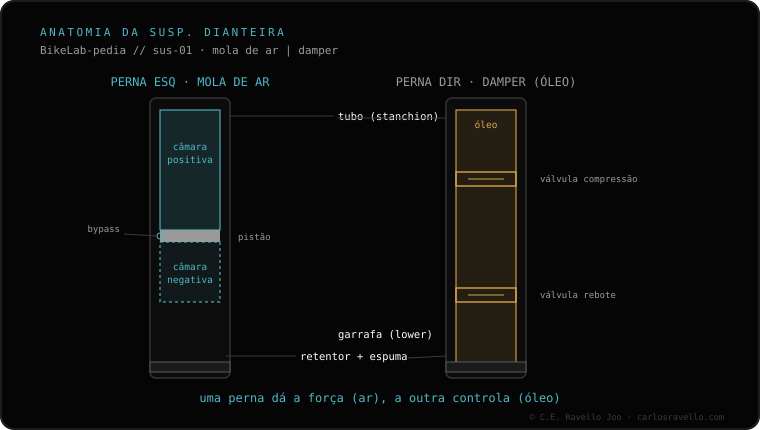

Numa suspensão de ar há duas câmaras. A positiva aguenta o seu peso e fixa o SAG. A negativa empurra no sentido contrário no início do curso e dá a sensibilidade inicial, tirando dureza no arranque. Nos garfos autoequalizáveis, ambas se igualam fazendo ciclos ao inflar: você comprime a suspensão várias vezes para que a pressão passe para a negativa. Se você pular esse passo, o garfo fica duro no início. A pressão você calibra com a pressão conforme seu peso.
Quase todo mundo conhece a câmara positiva: é onde você infla. Poucos conhecem a negativa, e no entanto é ela que faz o seu garfo se sentir sensível ou como um pedaço de pau.
Um garfo ou amortecedor de ar usa o ar comprimido como mola. Mas não usa uma só bolsa de ar, e sim duas opostas:
A câmara positiva é a grande, a que sustenta o seu peso. É a pressão que você ajusta conforme seu peso para conseguir o SAG correto: mais PSI, mais firme; menos PSI, mais macia. Quando você infla o garfo pela válvula, está enchendo a positiva.
A câmara negativa empurra contra a positiva bem no começo do curso. Para quê? Para vencer o atrito inicial e a própria pressão de arranque, de modo que a suspensão comece a se mover com o toque mais pequeno. Essa é a "sensibilidade inicial": a diferença entre um garfo que copia até as pedrinhas e um que ignora tudo o que é pequeno e só reage aos golpes grandes.

Nos garfos modernos, as duas câmaras se comunicam por um pequeno canal interno (sistema autoequalizável). Quando você infla a positiva, a negativa ainda está vazia ou desigual. Para que se equilibre, é preciso comprimir a suspensão várias vezes depois de inflar: cada compressão deixa passar ar da positiva para a negativa por esse canal, até que ambas se igualem na pressão correta.
Por isso o procedimento correto é: você infla até a pressão alvo, faz uns ciclos, volta a conferir e completa até deixar a positiva no valor desejado. Se você não faz os ciclos, a negativa fica com menos pressão do que deveria e o garfo arranca duro.
Conte seu modelo e a pressão que você colocou, e te guiamos a igualar as câmaras passo a passo. Fale com a gente no WhatsApp
A positiva aguenta o seu peso e fixa o SAG. A negativa empurra contra no início do curso e aporta a sensibilidade inicial.
Em garfos autoequalizáveis, comprimindo a suspensão várias vezes após inflar; o ar passa da positiva para a negativa por um canal interno.
Muitas vezes porque você não fez os ciclos ao inflar e a câmara negativa ficou baixa. Sem ela empurrando, o início se sente duro.
© 2026 BikeLab Studio. Conteúdo sob CC BY 4.0: você pode copiar, traduzir e publicar, inclusive com fins comerciais. A citação é obrigatória. Sem atribuição, a licença é revogada automaticamente (CC BY 4.0, §6.a) e o uso passa a ser violação de direitos autorais: solicitamos a retirada do conteúdo e sua desindexação. · Design e propriedade: Carlos Ravello Joo